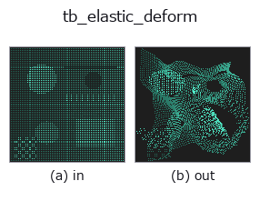

typed op• Datenarten: points → points
• Aufruf: fullseye.apply(img, "tb_elastic_deform", a=0.5, b=0.5) (das 2-D-Modell ist ein Bild plus zwei skalare Regler a,b∈[0,1])

*Die Abbildung ist die tatsächliche Ausgabe auf einer synthetischen 128×128-Eingabe. Links Eingabe, rechts Ausgabe. Punktwolken als Draufsicht-Streudiagramm (Helligkeit = z), 1-D-Reihen als Linie, Volumen als Maximum-Projektion entlang z, Videos als mittleres Bild, komplexe Bilder als Betrag; Rückgabewerte, die kein Bild ergeben, werden als Werte gezeigt.*
*Regler a ändert die Ausgabe nicht (gemessen: identisch bei 0,1 / 0,5 / 0,9).*
*Regler b ändert die Ausgabe nicht (gemessen: identisch bei 0,1 / 0,5 / 0,9).*
Stufen (die vorangehenden Ops → dieser Op, von links nach rechts):
▸ tb_elastic_deform: stages (docs site)
Auf anderen Bildern (synthetische Szene / Foto / Münzen. Obere Reihe: Eingaben, untere Reihe: deren Ausgaben. Regler auf Standard):
▸ tb_elastic_deform: other inputs (docs site)
Elastische Verformung über ein glattes, zufälliges Verschiebungsfeld (Korrelationslänge `sigma, RMS-Amplitude alpha`).
> Die ausführliche Beschreibung unten ist der Originaltext — Zusammenfassung und Überschriften sind übersetzt.
各点に独立ガウス乱数ベクトルを置き、空間ガウス重み `exp(-d²/2σ²)` で平滑化した
変位場を生成する(近接点は coherent に動く)。場は RMS を 1 に正規化してから
`alpha 倍するので、変位の RMS ノルムはちょうど alpha になる(σ→∞` で場は
定数=剛体並進, `σ→0` で各点独立)。非剛体な物体変形/柔軟物の学習に。
注意(honest): 近傍探索は `cKDTree.query_pairs(r=3σ)。σ` が雲の直径に近いほど
ペア数は O(N²) に近づくため、大規模雲では `σ` を局所スケールに保つこと。
`sigma < 0 は ValueError。sigma == 0` または 1 点だけの雲では平滑化せず各点
独立の変位になる。`alpha` は検証しない(0 なら無変位、負なら場が反転するだけ)。
`seed で決定論的。返り値は float64 (N,3)` で点数・順序は保たれる(変形前後の
対応が添字で分かるので、非剛体位置合わせの誤差を直接測れる)。空入力は空を返す。
2-D 進化レジストリへ橋渡しした 3d の op `elastic_deform。実装は同じで、呼び出し規約だけ op(v, a, b) に合わせてある。この op に調整点は無く、a も b` も使われない。
• Katalog der Beispieldaten (Download-URLs / Lizenzen) — 2-D nutzt skimage.data (BSD/Public Domain) plus synthetische Bilder, 3-D nennt Download-URLs echter Datenquellen (Stanford, PDS, …).
• Herkunft und Literatur der Operatoren — die Quellen der Forschung/Verfahren, auf denen diese Operatorfamilie beruht.
Das Programm unten ist nachweislich lauffähig (gleiche Eingabe wie die Abbildung). In der Studio-Hilfe wird dieser Block zu Schaltflächen, die es sofort laden und ausführen.
img_to_points 0.50 0.50 tb_elastic_deform 0.50 0.50
▸ Load this pipeline · Load & run
Die folgenden Beispiele rufen den zugrunde liegenden Ledger-Op elastic_deform auf. Dieser Brücken-Op ist dieselbe Implementierung, angepasst an die Konvention fn(v, a, b); das Verhalten gilt unverändert (nur die Aufrufform unterscheidet sich).
• sensor_seg — py -3.11 examples_3d/sensor_seg.py
points als Eingabe)identity · tb_points_to_voxel · tb_estimate_point_normals · tb_iss_keypoints · tb_project_points · tb_render_point_depth · tb_statistical_outlier_removal · tb_radius_outlier_removal
typed)tb_points_to_voxel · tb_estimate_point_normals · tb_iss_keypoints · tb_project_points · tb_render_point_depth · tb_statistical_outlier_removal · tb_radius_outlier_removal · tb_voxel_grid_downsample
*Provenance: ops.py — 2D Operator-Registry. Diese Notiz wird von tools/opdocs.py md erzeugt (nicht von Hand bearbeiten).*
© 2026 Kazufumi Furuse — Fullseye operator documentation. Licensed under Apache-2.0.
{kind=link}
{kind=link}